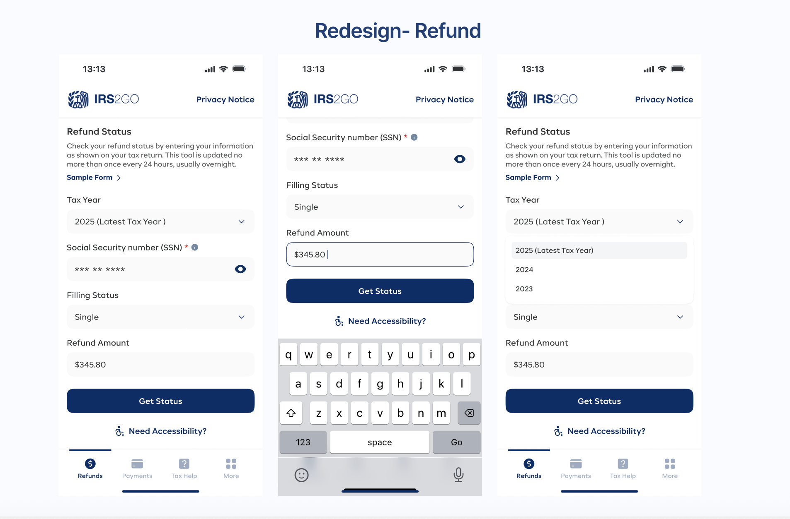
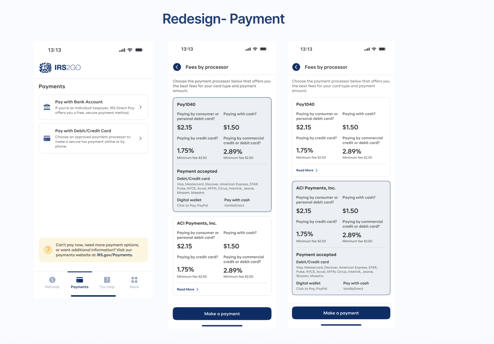
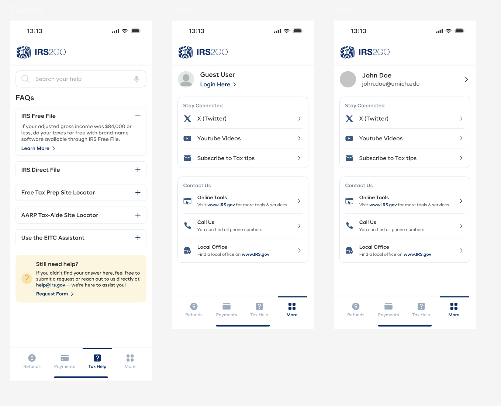

Making Tax Season
Less Taxing 🇺🇸
What is IRS2Go?
IRS2Go is the official mobile application of the Internal Revenue Service (IRS). It allows millions of American taxpayers to check their refund status, make secure payments, and find free tax assistance nearby.
This is a complete UX/UI overhaul of the existing app. The project focuses on transforming a rigid government tool into a user-friendly guide. By simplifying complex tax terminology and modernizing the visual interface, we aim to reduce user anxiety and increase successful task completion rates.
Why the Redesign?
Despite being an essential tool, the current app suffers from a dated interface and usability issues that frustrate users during an already stressful time.
The Core Problems:
- Visual Clutter: Information overload makes it hard for users to find simple answers like "Where is my refund?"
- Lack of Trust: Inconsistent design patterns make the official app feel less secure than third-party alternatives.
- Accessibility Gaps: The current color contrast and navigation fail to meet modern WCAG standards for inclusive design.
The Challenge
The primary challenge for the redesign was twofold, identified through literature surveys and app reviews:
- User Experience Issues: Most users were unable to perform certain tasks because of a lack of proper guidance and accessibility help.
- App to Web Transition: Users were confused because the existing app frequently redirected them to the website to complete tasks.

The Solution
To address these challenges, the team developed a comprehensive redesign strategy backed by data:
- User-Centric Approach: A deep dive into user needs through diary studies, app reviews, surveys, and interviews allowed the team to prioritize features.
- Task Analysis: Focusing on 3 main tasks (Refund Status, Payment, Tax Help) helped identify specific user pain points.
📝 3. Define Phase: Task Analysis
We analyzed the 3 core functions of the app to identify specific user friction points:
Check Refund Status
Users are confused by vague status messages and lack of estimated dates.
Make a Payment
The disjointed payment flow creates anxiety about accidental double-charges.
Free Tax Help
The location finder often returns zero results or outdated facility hours.


⏰ Project Timeline (4 Months)
The redesign was executed over a strict 4-month sprint structure:
💡 4. Ideate Phase: Scenarios & Solutions
To bridge the gap between user frustrations and the final design, we mapped out User Scenarios and analyzed the specific pain points of our selected tasks.
Developing User Scenarios
We visualized the user's journey through comic-strip narratives. This helped us empathize with the emotional context specifically the anxiety around tax refunds and the fear of making payment errors.
Figure 4.1: User Scenarios for Refund Status & Payment
Improving Selected Tasks
We audited the three core tasks against user feedback to identify why satisfaction scores were low (Red/Orange faces).
Improving Selected Tasks
We audited the three core tasks against user feedback to identify why satisfaction scores were low.
- Most frequently used Task.
- Inconsistent Input Fields.
- Lack of Standardization.
- Excessive Web Redirection.
- Inefficient Process.
- Lack of detail storage.
- Limited Help Focus.
- Missing Guidelines.
- Hard to find locations.
Figure 4.2: Pain Point Analysis & Satisfaction Scores
Key Friction Points Identified:
- Check Refund: Inconsistent input fields and lack of standardization lead to user errors.
- Make Payment: Excessive redirection to external websites breaks the app experience.
- Free Tax Help: Missing guidelines and limited search filters prevent users from finding help.
Brainstorming & Concepts
Focusing on these problem areas, we sketched layouts to simplify navigation and keep users inside the app.
Figure 4.3: Low-Fidelity Sketches of the New Flow
🎨 5. Prototype: High-Fidelity Designs
Moving from wireframes to the final UI, we applied the new visual identity. These high-fidelity prototypes demonstrate the streamlined flows for our core user tasks.
Flow 1: Home & Refund Status
Flow 2: Secure Payments
Flow 3: Tax Help & Support
🧪 6. Testing & Validation
To validate our redesign, we conducted usability testing using the Think-Aloud Protocol and the System Usability Scale (SUS). Our goal was to measure findability, trust, and task success rates.
Figure 6.1: System Usability Scale (SUS) Improvement
User Feedback Summary
✅ What Users Loved
- Clear navigation across features.
- High trust in the new payment flow.
- Help section found helpful by all users.
❌ Friction Points Identified
- Account setup was often abandoned midway.
- Mandatory field indicators were missed.
- Users wanted a "Guest Access" priority.
Figure 6.2: Qualitative Feedback Analysis
Design Iterations Post-Testing
Based on the feedback, we made critical refinements to the final UI.
Iteration 1: Prioritizing Guest Access
Insight: Users showed mixed preferences. Many preferred checking status immediately without creating an account.
Solution: We made "Explore without signing in" the primary action, moving Login to secondary emphasis.
Iteration 2: Payment Anxiety Reducer
Insight: Users feared accidentally triggering payments and wanted a clear invoice before committing.
Solution: Added a "Confirmation Modal" summarizing all fees and totals before the final transaction.
🚀 Experience the Final Prototype
Interact with the fully clickable high-fidelity prototype.
View Figma Prototype ↗